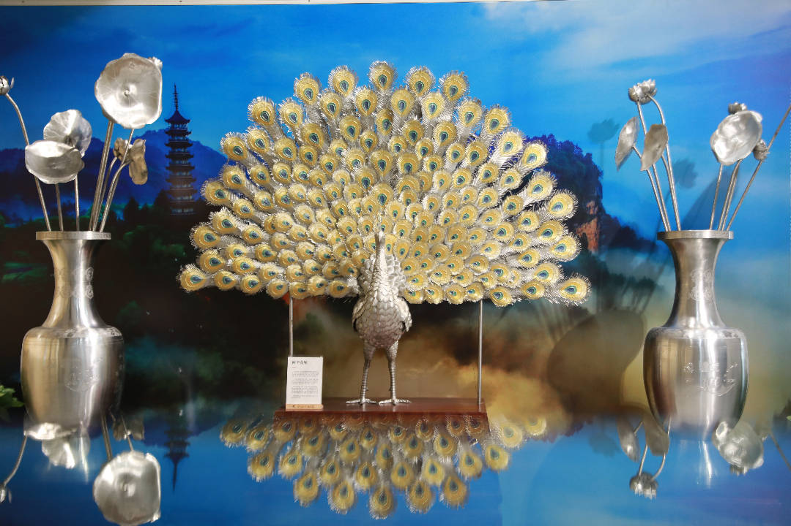
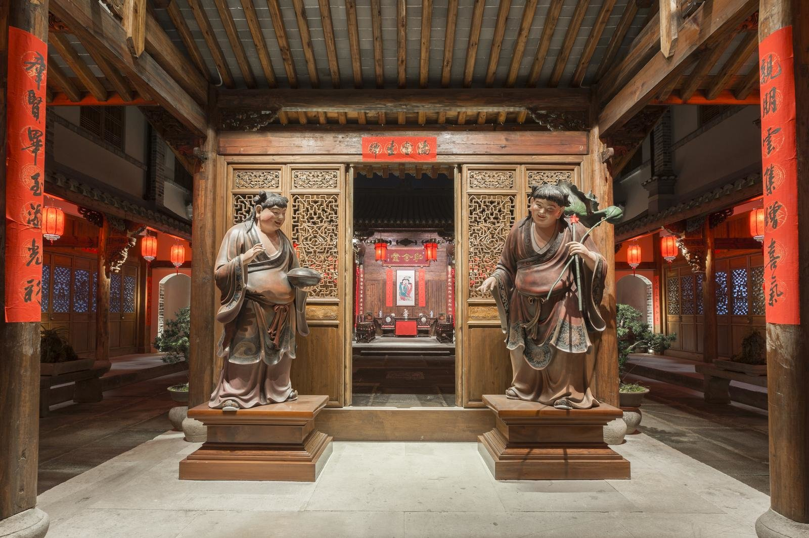
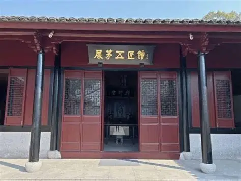

非遗匠心·传承文化主题线
路线概述
"非遗匠心·传承文化"主题线是一条聚焦浙江省非物质文化遗产和传统工艺传承的研学路线，通过实地考察丽水云和梯田景区、金华永康锡雕馆、台州和合人间文化园和舟山展茅五匠馆四个具有深厚文化底蕴的地区，深入了解浙江省丰富的非物质文化遗产和传统工艺。
本路线将带领学员体验传统工艺的制作过程，感受非遗文化的独特魅力，培养文化自信和传承意识，在实践体验中理解中华优秀传统文化的价值和意义。
行程天数
4天3夜
途经地区
丽水 → 金华 → 台州 → 舟山
适合人群
中学生、大学生、文化爱好者
主题特色
非遗文化、传统工艺、匠心传承
云和梯田位于丽水市云和县崇头镇，是华东地区最大的梯田群，被誉为"中国最美梯田"。这里不仅有壮丽的自然景观，还蕴含着丰富的农耕文化和畲族文化，是了解中国传统农耕文明的重要场所。
云和梯田始建于唐初，兴于元、明，距今已有1000多年历史，是劳动人民智慧的结晶。梯田景区内保存了完整的农耕生态系统和传统的农耕技艺，是研究中国农耕文化的重要基地。学员们将通过实地考察，了解梯田的形成历史、农耕文化的内涵以及畲族文化的特色。
互动体验
传统农耕体验
参与传统农耕体验，学习梯田耕作技艺，亲手种植水稻或蔬菜，感受农耕文化的魅力。
畲族文化体验
体验畲族传统文化，学习畲族歌舞、服饰和民俗，了解畲族文化的独特魅力。
永康锡雕馆位于金华市永康市，是展示永康锡雕技艺的专题博物馆。永康锡雕是浙江省非物质文化遗产，有着悠久的历史和独特的艺术风格，是中国传统金属工艺的重要代表。
永康锡雕起源于宋代，兴盛于明清，至今已有千年历史。锡雕技艺精湛，作品造型优美，纹饰精致，具有很高的艺术价值和实用价值。锡雕馆通过丰富的展品和现场演示，全面展示了永康锡雕的历史渊源、工艺特点和艺术成就。学员们将通过参观学习，了解锡雕技艺的传承发展，感受传统工艺的精湛技艺和独特魅力。

互动体验
锡雕技艺体验
参与锡雕技艺体验，在工匠指导下学习基本的锡雕技法，亲手制作简单的锡雕作品。
锡器修复体验
体验锡器修复技艺，学习传统修复方法，了解锡器保养和修复的知识。
和合人间文化园位于台州市天台县，是以和合文化为主题的综合性文化园区。和合文化是中国传统文化的重要组成部分，强调和谐、和睦、合作的精神，具有深厚的历史底蕴和现实意义。
文化园通过丰富的展陈和体验活动，全面展示了和合文化的内涵和价值，包括和合二仙传说、和合文化在民间的传承发展以及和合文化在现代社会的应用。园区内还设有传统工艺体验区、文化创意产品展示区等，是了解和体验和合文化的重要场所。学员们将通过参观学习，了解和合文化的精髓，感受中国传统文化的智慧和魅力。

互动体验
和合文化体验
参与和合文化体验活动，学习和合文化的内涵，体验传统礼仪和民俗活动。
传统工艺体验
体验传统工艺制作，学习剪纸、刺绣等传统技艺，感受手工制作的乐趣。
展茅五匠馆位于舟山市普陀区展茅街道，是展示舟山传统五匠技艺的专题博物馆。五匠指的是木匠、泥匠、石匠、铁匠和篾匠，是传统社会中重要的手工业者，他们的技艺是传统工艺的重要组成部分。
五匠馆通过丰富的实物展品、工具展示和工艺演示，全面展示了五匠技艺的历史渊源、工艺特点和传承发展。馆内还设有互动体验区，让参观者能够亲身体验传统工艺的制作过程。学员们将通过参观学习，了解五匠技艺的精湛和智慧，感受传统工艺的实用价值和艺术价值。

互动体验
五匠技艺体验
参与五匠技艺体验，选择木工、竹编等传统工艺，在工匠指导下制作简单的手工艺品。
工具制作体验
体验传统工具制作，学习传统工具的使用方法和制作工艺，了解工具在传统工艺中的重要性。